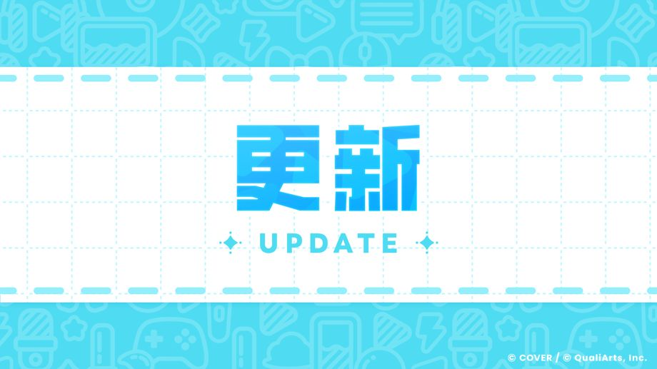
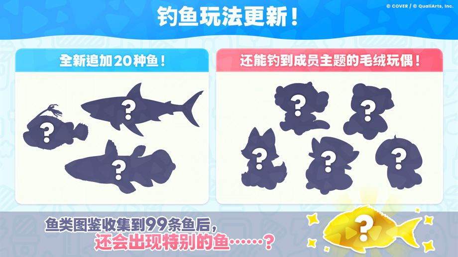
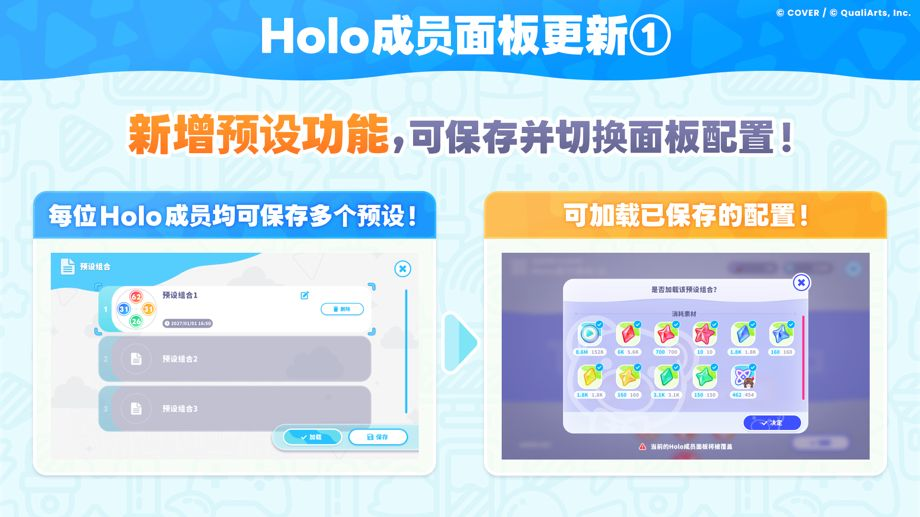
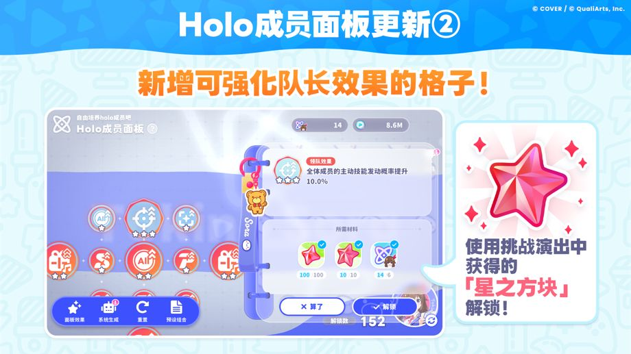

非常感谢您的支持。
我们是“hololive Dreams”运营团队。
2026-11-25 11:00:00已更新至Ver.1.3.0。
全新迷你游戏“浮排大战”上线

自2026-11-25 11:00:00起，全新迷你游戏“浮排大战”登场！
“浮排大战”是设法让落脚点上的对手落水的战略游戏。
巧妙驱动我方holo成员，或被推落水后加入我方的holo成员，占据优势吧。
玩家将在单人模式中对战各种holo成员，在多人模式中与其他玩家对战。
全新游戏内容“挑战演出”登场

自2026-11-25 11:00:00起，全新迷你游戏“挑战演出”登场！
挑战演出是一种新的演出内容，可以挑战每个关卡给定的目标分值。
通关奖励还包括新素材“星星方块”，可用于解锁新增的Holo成员面板格子。
您可以利用各关卡设定的“加成成员”，一路推进至最顶层的“第100关”。
其他更新内容
◆关于钓鱼的更新

- 将加入20种新的鱼类，鱼类图鉴的达成奖励也会随之解锁。
-
伴随此更新，今后将可以在Bae's 混沌杂货获得新的钓饵“蜜橘”“软糖”“星形混合鱼饵”。
获取“蜜橘”“软糖”需要通关汽水泡泡海湾的主线任务，“星形混合鱼饵”则需要钓起99种鱼才可解锁。
◆Holo成员面板功能的更新

-
“各holo成员的Holo成员面板重置功能”
我们新增了预设组合功能。今后，每位holo成员皆可预存多套Holo成员面板状态，之后可直接加载已保存的状态。

-
“添加需要新素材解锁的新格子”
我们在Holo成员面板中添加了强化领队效果的新格子。
解锁新格子需要消耗可在挑战演出中获得的“星星方块”。
◆演出改良·更新
- 即使有存量的“演出能量”，也可以选择在不消耗能量的情况下进行演出了。
- 大量恢复演出能量时，今后会弹出确认窗口了。
- 在演出能量恢复界面，点击“<<”或“>>”时，会阶段式停留在0、10、20、99等数值上供选择。
- 改善了选曲画面和评定值画面的跳转。
◆其他更新内容
-
“多位成员批量绽放功能”
针对当前可消耗“专用绽放Pt”进行绽放的成员，今后可以一键批量绽放了。 -
“在绽放成员选择画面中新增‘使用怒放石’复选框”
勾选后，也会显示可使用“怒放石”进行绽放的成员。 -
“在绽放画面中新增‘使用怒放石’的复选框”
勾选后，也会使用“怒放石”进行绽放。
※未持有“怒放石”时，不会显示复选框。
※将优先消耗“专用绽放Pt”。 -
“电玩巨蛋城代币也可通过Holowork获得”
今后执行“录音”“直播闲聊”类的Holowork，也可以获得电玩巨蛋城代币了。 -
“使用怒放石时弹出确认窗口”
今后在使用怒放石时将会弹出确认窗口。 -
“在成员详情页面仅显示成员基本参数”
今后，成员的详情页面可以仅显示基本参数，不显示来自“Holo成员面板”等要素的加成效果。 -
“在Holo成员任务中可直接移动到该holo成员附近”
今后可以点击Holo成员任务界面上的holo成员图标，直接移动到对应holo成员的附近了。 -
“单独设置个人资料公开项”
今后个人资料中的每一项都可以单独设置“公开”“不公开”“仅对好友公开”了。
◆其他调整·异常修复
-
已调整可在holo之家领取的礼物。
已调整为无论星期几，领取的礼物均为“Holo奖章”。 -
现在可以在汽水泡泡海湾的“一条贵宾会所”转换特训道具的颜色。
消耗汽水泡泡代币，即可将碎晶及水晶兑换成其他颜色的道具。
※通关主线任务第3章"汽水泡泡海湾"后解锁。 - 已调整协律花园中部分隐秘宝藏的出现位置。
-
调整了Holo成员面板的部分图标。
调整对象：“主动技能发动概率UP”“得分辅助效果” - 调整了部分holo成员演出服装的表情和色调。
- 已优化乐园掉落物的拾取操作。
- 修复了各个迷你游戏的轻微异常。
- 修复了其他轻微异常。